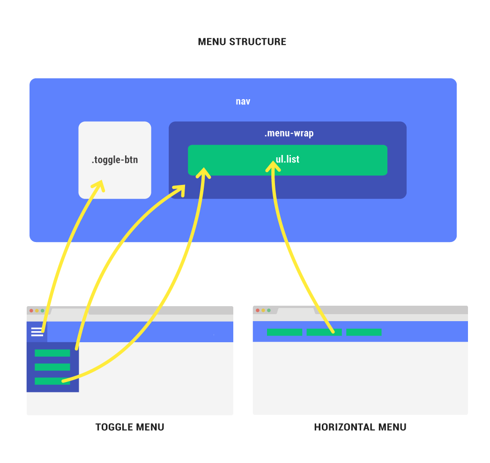

Instant Responsive Menus is designed to quickly setup different type of menus without changing the HTML markup. YES! change menu styles on the fly from horizontal to vertical to toggle menu to slide menu to fullscreen menu to a onepage scroll to dots navigation and more... all without chainging HTML markup
Step:1 Link the main CSS/Js files to your html page.
<link href="css/irm.css" rel="stylesheet">
<script src="js/irm.js"></script>
Step:2 Link the dependency files such as font awesome icons, jQuery, Modernizr and reset.css to your html page. Font awesome is not always required unless you are using icons. Place the script files at the bottom except modernizr.
<link href="css/reset.css" rel="stylesheet">
<link rel="stylesheet" href="css/font-awesome.min.css">
<script src="js/modernizr.js"></script>
<script src="js/jquery.min.js"></script>
Instant Responsive Menus is primarily built with SASS but you also get a compiled CSS file.
This folder consist of basic default animations that you can add to submenu or menu wrap
Config folder consist of all configurable files where you can change variable values for menu styles, breakpoints, colors, typography and icons.
themes folder consist styles required to make usnique styled menus like the responsive tabs menu.
This folder consist of basic default styles that is required for the presentation purpose.
headers folder consist styles required to make a simple header.
this folder has helper files such as clearfix, list structure, media query etc.
menu folder has crucial sass files that make the bare bone structure of the menu.
modules has modules or widgets such as buttons and social media icons.
styles folder consist of customizable style files. By adding your own or update the existing styles you can easily change the menu look and feel.
NOTE: irm.scss imports all the sass files.

<nav class="irm">
<a class="toggle-btn"><span></span></a>
<div class="menu-wrap">
<ul class="list">
<li><a href="#"> List items </a>
. . .
. . .
. . .
The structure of the UL can be changed on the fly from vertical, horizontal, center, justified, breadcrumbs or a responsive list by changing the CSS classes of the unordered list.
For example adding modifier classes .li-horizontal or .li-vertical to ul.list will make it horizontal or vertical similarly .li-responsive class makes the list responsive and li-split will split the menu to the width of the logo which has a class of .brand to it.
These classes can be applyed to multiple ul’s on the page. Example the ul list in the main menu can have .li-horizontal class applied to it while the ul list in the sidebar can have .li-breadcrumbs or .li-vertical applied to it.
In combination with the above classes use the below classes to modify it further.
Add class .li-horizontal to any ul.list to make it horizontal list
ul.list li-horizontal
li ...
li ...
/ul
Add class .li-vertical to any ul.list to make a vertical list
ul.list li-vertical
li ...
li ...
/ul
Add class .li-center to any ul.list to create a center aligned list.
ul.list li-center
li ...
li ...
/ul
Add class .list .li-justified to any ul to make it justified list as shown below.
ul.list li-justified
li ...
li ...
/ul
Add class .li-breadcrumbs to any ul.list to make it breadcrumbs menu
ul.list li-breadcrumbs
li ...
li ...
/ul
NOTE: Use the class li-responsive with any of the above horizontal list to make it vertical in tablet. The .li-split class (works best with li-center and li-justified) this class splits the menu in the middle and adds extra space for a centered logo. logo should have the class .brand for it to work.
Add class .li-responsive to any ul.list to make it responsive menu
ul.list li-center li-responsive
li ...
li ...
/ul
Add class .li-split to make a split menu. The logo should be centered with class .brand for .li-split class to work correctly.
ul.list li-horizontal li-responsive
li ...
li ...
/ul
Once you have structured the list items, menu links can be easily styles by adding a class that specifically styles only the links. please see assets\_sass\styles\link-style.scss for available link styles or add your own.
<!-- menu -->
<nav role="navigation" class="irm">
<a class="toggle-btn hamburger"><span></span></a>
<div class="menu-wrap">
<!-- list -->
<ul class="list li-breadcrumbs link-style-1">
<li><a href="#"> Menu Link </a></li>
. . .
. . .
. . .
</ul>
<!-- /end list -->
</div>
</nav>
<!-- /end menu -->
Change menus on the fly by applying any of the below classes to nav.irm in combination with ul.list as shown previously
To change the menu structure in tablets use the below classes in combination with the above mentioned classes.
For example a horizontal menu can be easily collapsed in tablet by using nav.irm .toggle-in-tablet .dropdown .top-left
NOTE: The ul.list is unaffected by the nav.irm classes to make ul.list .li-horizontal responsive or vertical in tablet add class .li-responsive
Code Sample:
<!-- menu -->
<nav role="navigation" class="irm toggle-menu dropdown top-right">
<a class="toggle-btn hamburger"><span></span></a>
<div class="menu-wrap">
<!-- list -->
<ul class="list li-vertical link-style-1">
<li><a href="#section-1">Demos</a></li>
<li><a href="#section-2">Features</a></li>
<li><a href="#section-3">Usage</a></li>
<li><a href="#section-4">Download</a></li>
</ul>
<!-- /end list -->
</div>
</nav>
<!-- /end menu -->
To collapse a horizontal menu and toggle it or slide it in screens less than tablets simply add "-in-tablet" to .toggle or .slide classes as shown below.
That's it we are all set now! Just copy and paste one of the HTML menu markup and customize or build upon it.
The end.